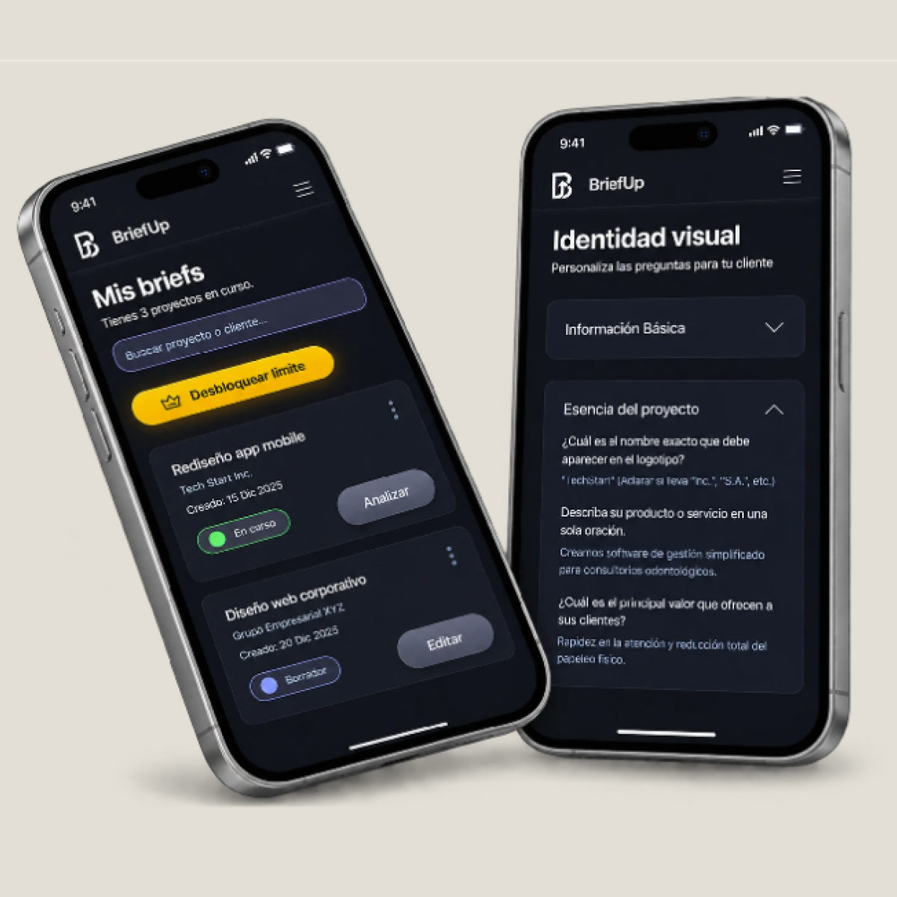
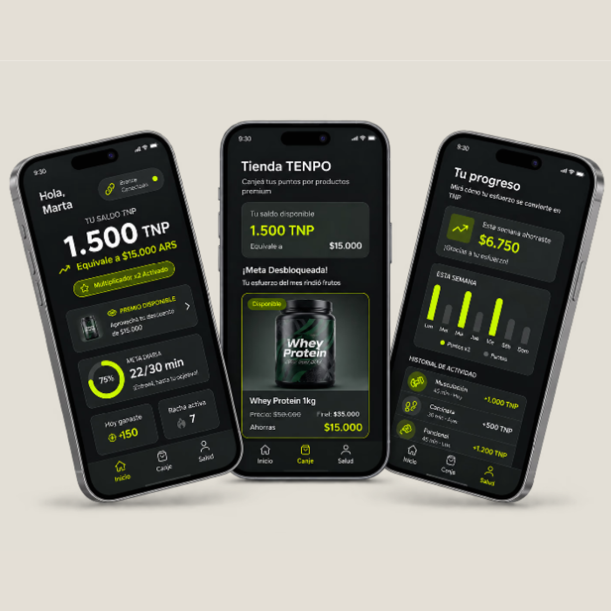

Deriva
App que conecta personas por afinidad, usando el territorio como señal.

Proyectos Digitales
SaaS B2B, fintech y sistemas de diseño construidos desde el research hasta producción.
Una selección de tres casos que muestran cómo pienso, investigo y diseño.
App que conecta personas por afinidad, usando el territorio como señal.

Diseñé el producto completo, de discovery a design system, 100% de finalización en testing de usabilidad.

Auditoría UX de 6 flujos y 39 hallazgos, más Design System completo con validación WCAG AA.

Ecosistema de salud y accesibilidad para adultos mayores, basado en un producto físico.